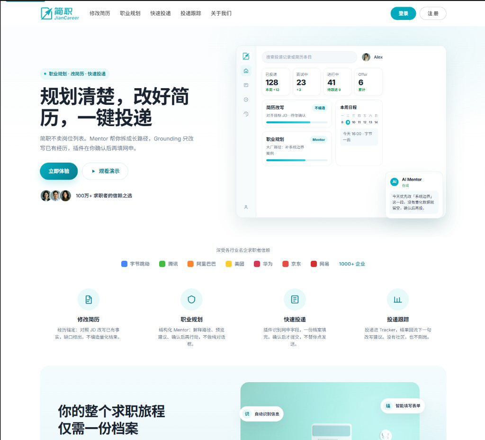
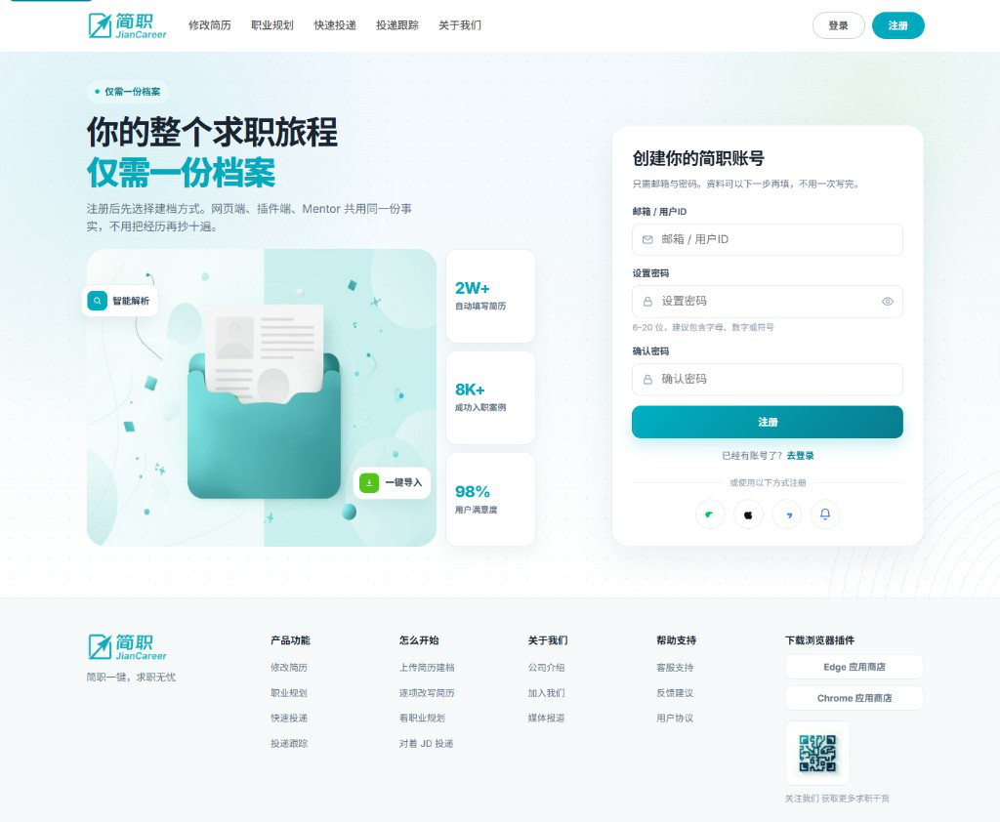
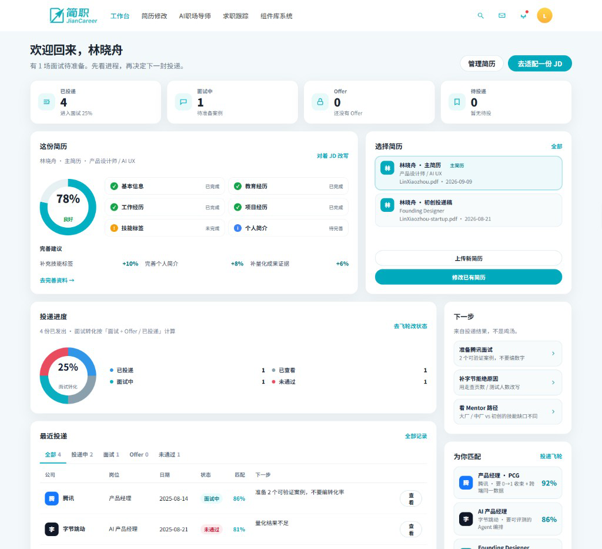
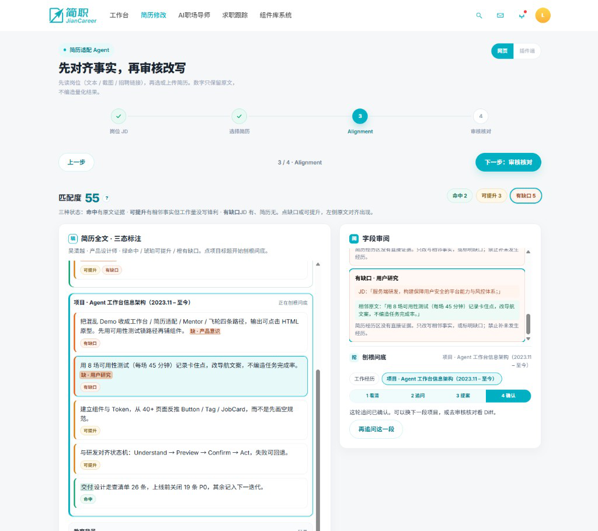
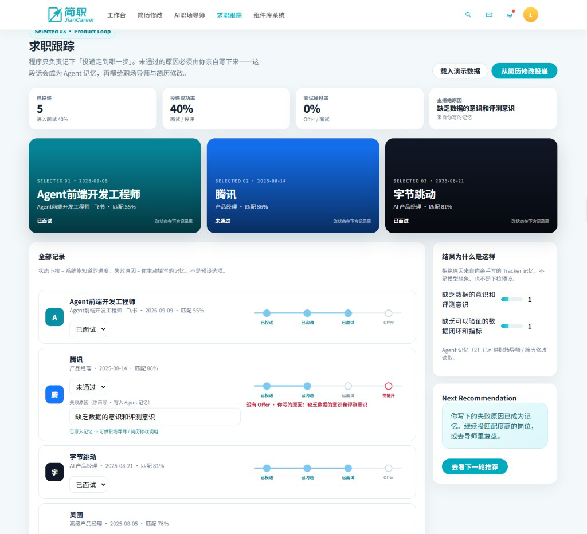

简职 JianCareer
这轮要证明什么
这轮对齐到哪
Ver 1 讲的是 0→1：从混乱 Demo 反推多入口架构、结构化 Mentor 和组件库。那一版叙事仍然成立，但它停在「设计决策」。
2026 这轮迭代，我把简职从「看起来覆盖了 40+ 页」收到面试官能亲手点、判断我能不能设计复杂 AI 产品的状态。技术报告仍是 B07 0662（大模型多 Agent 架构的职业决策与智能行动系统）。作品集对外岗位口径是 AI Product Developer & UX Researcher，简职是 Featured 主讲。
jc_lab_v1；设计系统从页面沉淀成 Component / Pattern，而不是只剩 tokens。
背景与问题
求职链路碎片化：简历重复填写、网申入口割裂、职业建议缺乏结构。传统平台给职位列表，很少帮用户走完「理解自己 → 匹配岗位 → 行动投递」。
简职要做成 AI Agent 驱动的一站式求职助手。我入场时，手里是一句话需求、草图，以及开发侧已经能跑、但页面不统一、交互断裂的演示原型。后来外部反馈更狠：交互和体验仍有巨量提升空间——拆开看，不是缺动效，而是入口语义打架、Agent 状态说不清、填写没有即时回报。

我的角色
作为 UI / Product Designer，我负责 0→1 体验与组件规范：拆产品框架、对齐三条入口的用户模型、把混乱 Demo 收成可协作的设计系统。这不是纯视觉美化。
后半段转到 Vibe Coding：先用 Lovable 验证关键链路，再落到本地 HTML 原型（营销首页、注册登录、建档、工作台，以及三间实验室）。现在面试讲简职，我打开的是能点的页面，不是只讲 Figma 帧。
产品首页是唯一默认
访客顶栏只留 Logo、功能介绍、关于我们，以及 登录（实心青绿）/ 注册（白底描边）。不再放「修改简历 / 职业规划 / 快速投递 / 投递跟踪」五段导航——那些是登录后的工作，不是获客页该抢的注意力。
Hero 主句钉死：规划清楚，改好简历，一键投递。右侧是工作台浮层 mock（已投递 / 面试中 / Offer、Grounding、Mentor），不是实验室工作台本身。往下是信任条「深受各行业名企求职者信赖」、四列功能，以及「你的整个求职旅程仅需一份档案」。
退出登录必须回到这张首页，再走登录或注册：
登录 → 工作台
注册 → 上传简历 → 完善档案 → 工作台
在线可点的产品 Demo：leonardolee351-lmx.github.io/JianCareer_JobAppAgent。官网仍是获客页；这条链接给面试官直接进产品流程。

一份档案 · 三条入口
信息只录入一次。三条入口共用同一用户模型：
• 注册建档：上传 → 核对档案 → 尽快进入可用简历状态
• 工作台：扫一眼进度，再决定改简历、问 Mentor、还是去 Tracker
• 浏览器插件：网申现场执行层——把已结构化资料送到真实表单，确认后再填
插件不是另起一套表单。若业务要加字段，先改用户模型契约，再三端同步。



四条可点证据链
40+ 页只证明覆盖面。面试真正要打穿的是下面四条。从 四点证据链入口 开始。
01 Grounding：经历锚定，不编造
问题不是「AI 改简历」，而是：如何把已有资料快速适配到目标 JD，同时不伪造真实经历。目标是一键 apply 真实经历。
流程：Existing Profile → JD Evidence → Gap Analysis → Suggested Rewrite → User Review。Alignment 左栏拉出简历全文（基本信息 / 教育 / 工作 / 项目 / 校园），再在全文上标 match / gap。分析主战场是项目、工作与校园里最值钱的工作量；未抽到字段的句子收进折叠区，避免右栏被刷屏。最多 3–4 个 Alignment 追问。

02 Mentor：可控 Agent，而且有记忆
状态机：Understand → Explain → Propose → Preview → Confirm → Act → Recover。关键词是 State / Explainability / Preview / Confirm / Undo。
Mentor 同时平衡 职业成长 和 Job Fit：累积目标岗位后，要能分化大厂 / 中厂 vs 初创的成长路径与技能缺口。没有 Preview 和 Undo，就不算可控 Agent；没有记忆，就只是一次性对话框。
所以 Mentor 不做纯 ChatGPT 空白输入。每次只聚焦一个维度，结果可解释，脚本可回放、可交给运营改。
03 投递飞轮：Action creates Record
Apply → Record → Track → Outcome → Feedback → Next Recommendation。Tracker 要能看投递成功率和面试通过率；Mentor 据此给下一句建议。
边界：状态可以由系统记录（已投递 / 已沟通 / 已面试 / 未通过 / Offer）；失败原因必须用户手写。预设下拉等于替用户下结论，后续改写会基于假记忆。
jc_lab_v1，改完状态再回 Mentor，下一句建议必须能对上刚才的结果。

04 设计系统：页面沉淀为 Component / Pattern
Token 分层是 Reference → Semantic → Component → Density，要同时吃 Web 与插件双密度。真正给面试官看的不是 tokens 表，而是视觉工作台：JobCard / MatchScore / AgentStatus / ApplicationStatus 这些业务组件从页面里长出来。
工作台：扫一眼再行动
登录后的工作台做过一轮减法：问候 + 一个主按钮 + 能扫到的进度，而不是把实验室、社区、洞察一股脑铺上。用户先知道「这周投了什么、卡在哪」，再决定进 Grounding、Mentor 还是 Tracker。
品牌 lockup（箭头文件标 + 简职 / JianCareer）贯穿访客顶栏与登录后顶栏，注册 / 登录页用同一套青绿调性，避免「官网一套、产品一套」。
关键交互决策
决策一：不用纯 ChatGPT 对话框，改用结构化引导
AI Mentor 要帮用户挖优势、对照 JD、给成长路径。开放式对话框看起来「AI」，但在求职场景会放大不确定性：用户不知道该问什么，模型也容易跑偏。

决策二：个人信息用渐进式披露，而不是一页长表
求职资料天然字段多。我把填写拆成可完成的小步，让用户始终看到「这一步为什么重要、完成后能解锁什么」（例如更准的匹配 / 插件可一键填）。目标是把完成率问题，从「愿不愿意填」转成「每一步都有即时回报」。

决策三：先重构规范，再堆页面数量
面对开发交付的混乱 Demo，我没有直接「美化截图」，而是从 user flow 与组件层重建：色彩、字体、状态、业务模块组件化。40+ 页高保真是结果；真正交付物是后来实习生也能接着做的组件库与视觉规范。


决策四：Job Tracking 只给状态下拉；失败原因必须用户手写
程序能可靠知道的，是投递进度：已投递 → 已沟通 → 已面试 → Offer / 未通过。面试为什么没过，系统没有上帝视角——若做成第二个下拉（「量化不足 / 方向过散…」），等于用选项替用户下结论，后续 Mentor 与简历修改会基于假记忆给建议。
正确分工：状态可选；失败原因用输入框邀请用户主动填写；写入后成为 Agent 记忆，再驱动「下一轮怎么改简历 / 导师说什么」。

关键链路先用 Lovable 验证对话节奏，再落到本地 HTML。这轮迭代不再等工程排期才发现跳转不通——营销首页、建档、工作台和三实验室都是我可以当场点开的。
成果与证据
产品进入 AI Agent 2025 toC 软件榜单 TOP 10%，并在伯乐与千里马分榜取得 TOP 1。榜单证明垂直场景 + 可讲清的体验架构比堆功能有效。对我自己更硬的证据，是现在能当场打开：营销首页、一份档案路径、Grounding 不编造、Mentor 有记忆、Flywheel 反哺、组件库工作台。

反思与收获
交互体验的真正瓶颈：早期反馈里「交互与体验有巨量提升空间」——拆开看，往往不是缺动效，而是入口语义不一致、对话状态不清晰、填写没有即时回报。多入口对齐 + 结构化 Mentor，是我后来反复强调的两条主线。
关于 AI 产品温度：过度结构化会像表单机器；过度开放会让用户迷路。Mentor 的价值在中间态：有边界的引导，外加可解释的结果展示。
如果再做一次：更早做 3–5 名应届生可用性测试，专门测首次建档完成率、Grounding 确认率、失败原因是否真的被写下来。用任务成功率迭代脚本，而不是再加页面。
面试思考题 · 面向 B 端产品面试官
简职表面是 toC 求职助手，但火山 / 字节类面试官常会把你往「系统、指标、协作、边界」上压。下面每题给答题骨架，面试时按自己的真实经历填充数字与反例。
Q1 · 如果这是你们公司的 AI 求职产品，你怎么定义成功？
骨架：分层指标，而不是「用了 AI」。
• 体验指标：首次资料完成率、Mentor 会话完成率、插件一键填成功率
• 行为指标：7 日回访、投递动作转化（对话 → 投递）
• 质量指标：推荐岗位点击后的「相关/不相关」轻反馈、Mentor 下一问是否被采纳
• 明确不用：日活虚荣、模型回复长度、页面数量
Q2 · 为什么不做纯 ChatGPT 对话框？这对「Agent 产品」意味着什么？
骨架：场景约束 > 模型自由。
求职是高认知负荷任务，开放闲聊会放大「不知道问什么」。结构化 Mentor = 有边界的状态机：每轮只挖一个维度，结果可解释。对 B 端表述：这是可控的 Agent 编排，不是套壳聊天——便于评测、可回放、可交给运营改脚本。
Q3 · 三入口（注册 / Dashboard / 插件）如何证明是同一用户模型，而不是三套产品？
骨架：信息只录入一次；字段语义跨端一致；插件是「现场执行层」不是另起表单。
追问防守：若业务要求插件加字段，先改用户模型契约，再三端同步——否则入口语义会再次撕裂。
Q4 · 面对「开发 Demo 已能跑、但体验混乱」，你如何排优先级？
骨架：先 IA / 路径，再单页视觉；先组件规范，再堆页面数量。
理由：演示能过会 ≠ 可协作交付。40+ 页是结果，组件库才是让实习生能接着做的资产。面试官爱听的是「你挡住了什么错误路径」。
Q5 · 如果业务方要求「再多接三个 Agent 角色一起聊」，你怎么说不？
骨架：先问任务目标与验收标准。多 Agent 只有在「分工可解释、输出可拼接、可评测」时才值得上；否则增加延迟与幻觉面。简职阶段优先把单 Mentor 状态机做稳，再谈会诊式扩展。
Q6 · 设计系统对工程协作的真实价值是什么？（防「只是好看」）
骨架：状态完备（空/加载/错误/权限）、业务模块组件化、命名与开发可对齐。
证据链：从混乱 Demo → 规范 → Lovable 可点原型验证关键链路，缩短「设计稿好看但交互不通」的反馈环。
Q7 · 若只能保留一个核心体验，你会留哪条？为什么？
骨架（选一个主答案并准备备选）：
• 主推：多入口同一用户模型——没有它，后面 AI 再聪明也是重复填写
• 备选：结构化 Mentor——没有它，对话无法验收
说明取舍：插件炫技、社区热闹都可以后置。
工程资料
可点原型、组件库与 Figma 工程均可在面试追问时当场打开。
Figma CODEX： Jiancareer-CODEX
工作记录归档： 组件库 + 网页工程
相关文件
以下 PDF 为简职项目完整技术报告，涵盖大模型多 Agent 架构、职业决策算法与系统实现细节，可直接在线预览或下载。
若浏览器无法预览，可点此下载。
视觉资产存档
项目全周期界面与过程资产。面试优先讲营销首页、建档、工作台截图，再翻旧版模块图。